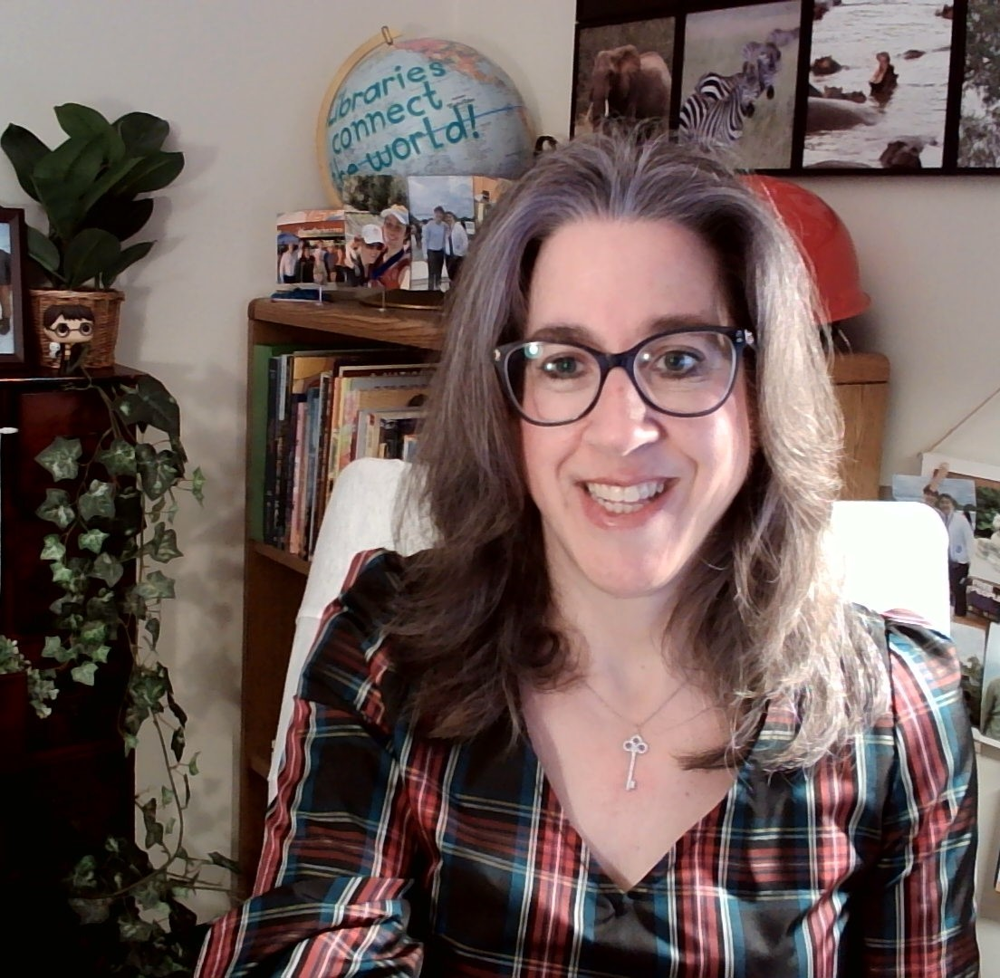

Lisa Seymour
EME 6208: Designing Integrated Media Environments | University of Florida
About Me

My career in education has taken me from teaching technology and creating school makerspaces to supporting faculty and students in higher education. Throughout that journey, my work has centered on helping others develop the skills and confidence to use technology for teaching, learning, and research. Today, I am a librarian and Associate Professor at Palm Beach State College, where I provide research assistance, teach library instruction and AI literacy sessions, facilitate professional development for faculty, and contribute to collection development.
I began my career as a technology education teacher in 1996, teaching video production, graphic design, and HTML coding. After spending ten years at home raising my two sons, I returned to education in 2012 as an elementary school media specialist. During my seven years in that role, I developed a makerspace where students explored coding, robotics, 3D printing, and television production. In 2019, I became the District Specialist for Library Media for the School District of Palm Beach County, a position I held until joining Palm Beach State College in 2023.
I earned my bachelor's degree from the University of Massachusetts Amherst in 1992 and my master's degree in Library Science from the University of South Florida in 2022. In 2024, I began pursuing my doctorate in Curriculum and Instruction with a specialization in Educational Technology at the University of Florida. I passed my qualifying examinations in 2026 and am currently a doctoral candidate. My academic interests include generative artificial intelligence, information literacy, and the ethical integration of AI into teaching and learning.
I am actively involved in my community. I volunteer with the Jewish Federation of Palm Beach County, where I serve on several committees, and with the Education Foundation of Palm Beach County. I also serve as chair of the Palm Beach County Library System's Library Advisory Board.
My husband, Brian, and I have been married for 26 years and have two sons. David is a first-year law student at the University of Chicago, and Jacob is majoring in information technology at the University of Central Florida. When I'm not working or studying, I enjoy reading, shopping, and traveling.